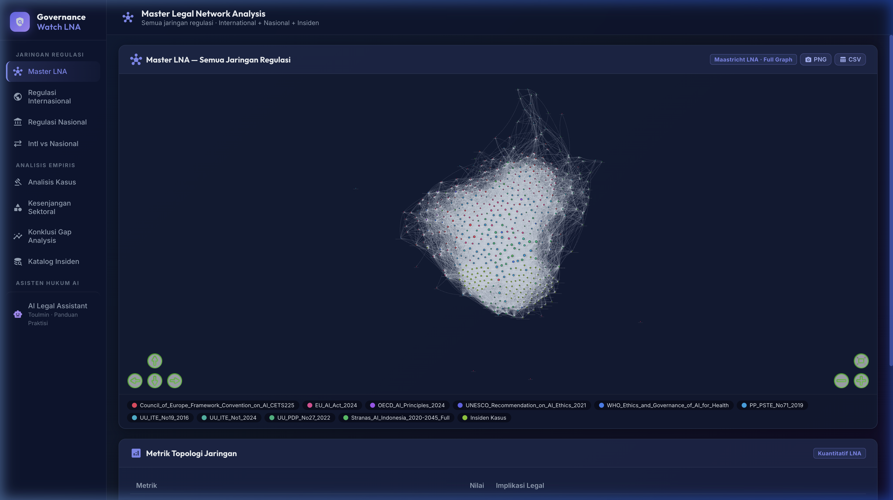
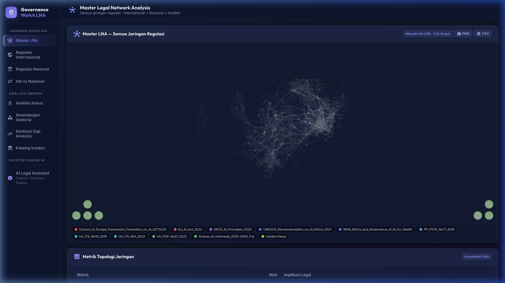

Digital Governance Watch merupakan instrumen forensik-komputasional yang dirancang secara spesifik untuk menganalisis tingkat kesiapan dan kepadatan regulasi kecerdasan buatan (AI) di Indonesia vis-à-vis standar tata kelola internasional. Sistem ini dikembangkan dengan arsitektur Single Page Application (SPA) berbasis manipulasi Document Object Model (DOM) murni (Vanilla JavaScript) dan Backend Python. Antarmuka pengguna diimplementasikan menggunakan paradigma desain Glassmorphism guna menghadirkan pengalaman analitik yang interaktif, responsif, dan jernih.
Fondasi metodologis sistem ini bertumpu pada Legal Network Analysis (LNA). Pendekatan ini mengimplementasikan teori jaringan menggunakan graf terarah (directed graphs) yang dikelola oleh mesin vis-network dengan mengadopsi tata letak fisika padat (Compact Topology Physics).
Modul utama beroperasi melalui integrasi mesin rendering grafis komputasional beresolusi tingkat tinggi (Retina 4K WYSIWYG Engine).
Sistem memodelkan relasi hukum (direpresentasikan sebagai edges) antar entitas pasal (direpresentasikan sebagai nodes) layaknya sebuah ekosistem algoritma force-directed graph. Entitas-entitas titik tersebut bergerak menyerupai simulasi daya tarik-menarik gravitasi relasional (menggunakan parameter koefisien gravitationalConstant: -75 dan springLength: 90). Pendekatan ini secara otomatis menghasilkan klasterisasi yang rigid, sehingga mempermudah identifikasi celah hukum (structural holes) serta sentralitas suatu instrumen regulasi.


Mengingat tingginya tingkat redundansi dan anomali instrumen nasional yang tidak terhubung secara hermeneutika (zero-degree nodes), sistem ini dilengkapi dengan fitur eksklusi algoritmik bernama "Toggle Isolasi". Mekanisme ini memfasilitasi pengguna untuk secara instan mendepak seluruh norma hukum independen dari kanvas observasi, sehingga menyisakan murni kohesi relasi hukum primer.
Sebagai bentuk mitigasi terhadap limitasi intrinsik HTML5 Canvas yang mengunci rasio piksel pada perangkat keras pengguna, sistem ini telah diprogram dengan kemampuan injeksi skala piranti virtual (Device Pixel Ratio Overriding sebesar 4.0x). Konfigurasi ini memungkinkan setiap proses Export PNG memproduksi luaran peta topologi 4K natif tanpa mendistorsi titik ordinat asali maupun memaksa pemunduran lensa simulasi (True WYSIWYG). Peneliti dapat secara leluasa mengekstraksi wilayah klaster tertentu secara terfokus tanpa mengalami degradasi ukuran tipografi anotasi.

Sistem ini mengakomodasi pembuktian empiris atas Teori Kekosongan Hukum dengan memproyeksikan lebih dari 100 inventarisasi kasus penyalahgunaan kecerdasan buatan, modifikasi biometrik manipulatif, serta pencurian data dalam Penyelenggaraan Sistem dan Transaksi Elektronik (PSTE) secara real-time ke dalam matriks regulasi. Kartu Insiden Siber direpresentasikan dengan data forensik definitif yang mencantumkan kronologi, klasifikasi ancaman, dan pemetaan rujukan ke pasal eksisting.

Untuk melampaui paradigma pelaporan komputasional yang statis, sistem ini mengimplementasikan Modul Inferensi Pintar dengan memanfaatkan Model Bahasa Generatif (LLM). Prompt Engineering algoritmik dari asisten tersebut telah direkayasa sedemikian rupa untuk memformulasi justifikasi silogistik berdasar atas Model Argumentasi Toulmin.


Konvergensi mekanisme forensik tersebut mentransformasi representasi visual dasbor analitik menjadi instrumen penyelidikan spasial (spatial regulatory mapping). Instrumen ini terbukti relevan dalam menyodorkan tinjauan panoramik atas disonansi antar-hirarki instrumen hukum nasional dan internasional, sekaligus menjadi preseden kuantitatif dan kualitatif guna mengelevasi perdebatan penegakan Artificial Intelligence Governance di Indonesia dalam koridor akademik dan yudisial.